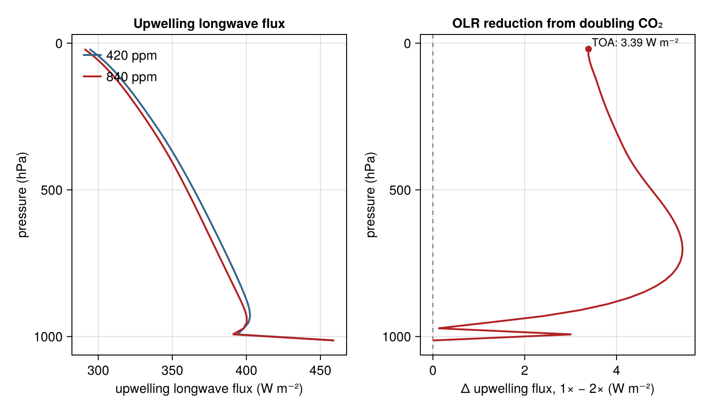

CO₂ forcing with ecCKD
This example computes the instantaneous, clear-sky longwave effect of doubling CO₂ — the reduction in outgoing longwave radiation (OLR) at the top of the atmosphere when the CO₂ column amount is doubled with temperature, humidity, and everything else held fixed — using an official ecCKD gas-optics model, i.e. the full tabulated g-point machinery a host model would run. The longwave page computes the same class of benchmark with the analytic-band Williams scheme; the two pages pose a related CO₂-doubling question through two different gas-optics and solver interfaces.
We build one idealized clear-sky column and solve its longwave fluxes at two CO₂ concentrations through a small helper.
using NumericalRadiation
using NCDatasets
using Printf
gas_optics = read_official_ecckd_gas_optics("32x32"; gas_names = (:h2o, :co2))
nlayers = 48
p_i = collect(range(2_000.0, 101_325.0; length = nlayers + 1)) # Pa, TOA first
p_layers = 0.5 .* (p_i[1:end-1] .+ p_i[2:end])
air = diff(p_i) ./ (9.80665 * 0.0289647) # mol m⁻²
Tsfc = 300.0
T_layers = clamp.(Tsfc .- 65.0 .* (1 .- (p_layers ./ 101325.0) .^ 0.286), 200.0, Tsfc)
T_interfaces = clamp.(Tsfc .- 65.0 .* (1 .- (p_i ./ 101325.0) .^ 0.286), 200.0, Tsfc) Downloading artifact: ecrad_data
Failure artifact: ecrad_data
Downloading artifact: ecrad_data
The temperature profile is an idealized lapse rate capped at 200 K aloft; it is prescribed and does not respond to the radiation.
function longwave_column(co2_ppm)
atmosphere = ColumnAtmosphere(;
pressure_layers = p_layers, pressure_interfaces = p_i,
temperature_layers = T_layers, temperature_interfaces = T_interfaces,
gases = (composite = air, h2o = 0.006 .* air, co2 = co2_ppm * 1e-6 .* air),
surface = (temperature = Tsfc,), geometry = (cos_zenith = 0.5,))
ng_lw = length(gas_optics.longwave_weights)
ng_sw = length(gas_optics.shortwave_weights)
longwave = LongwaveOpticalProperties(zeros(ng_lw, nlayers), zeros(ng_lw, nlayers);
source_top = zeros(ng_lw, nlayers), source_bottom = zeros(ng_lw, nlayers),
weights = zeros(ng_lw))
shortwave = ShortwaveOpticalProperties(zeros(ng_sw, nlayers); weights = zeros(ng_sw))
fluxes = RadiativeFluxes(longwave_up = zeros(nlayers + 1), longwave_down = zeros(nlayers + 1),
shortwave_up = zeros(nlayers + 1), shortwave_down = zeros(nlayers + 1))
optical_properties!(longwave, shortwave, gas_optics, atmosphere)
radiative_fluxes!(fluxes, CloudlessLongwave(), longwave, atmosphere,
LongwaveBoundaryConditions(surface_longwave_up = 5.67e-8 * Tsfc^4))
return (; olr = fluxes.longwave_up[1], up = fluxes.longwave_up)
endSolve the same column at present-day and doubled CO₂:
base = longwave_column(420.0)
doubled = longwave_column(840.0)Sign convention: the instantaneous forcing is the reduction in OLR, base-CO₂ OLR minus doubled-CO₂ OLR, so a positive value means the doubled column emits less to space.
forcing = base.olr - doubled.olr
@printf("OLR at 420 ppm CO₂: %6.2f W m⁻²\n", base.olr)
@printf("OLR at 840 ppm CO₂: %6.2f W m⁻²\n", doubled.olr)
@printf("instantaneous clear-sky LW ΔOLR (2×CO₂): %6.2f W m⁻²\n", forcing)OLR at 420 ppm CO₂: 294.03 W m⁻²
OLR at 840 ppm CO₂: 290.64 W m⁻²
instantaneous clear-sky LW ΔOLR (2×CO₂): 3.39 W m⁻²
Doubling CO₂ reduces the OLR of this fixed column by a few W m⁻². The upwelling-flux profiles show how that reduction varies with height:
using CairoMakie
fig = Figure(size = (760, 440))
ax1 = Axis(fig[1, 1]; xlabel = "upwelling longwave flux (W m⁻²)",
ylabel = "pressure (hPa)", yreversed = true,
title = "Upwelling longwave flux")
lines!(ax1, base.up, p_i ./ 100;
color = :steelblue4, linewidth = 2, label = "420 ppm")
lines!(ax1, doubled.up, p_i ./ 100;
color = :firebrick, linewidth = 2, label = "840 ppm")
axislegend(ax1; position = :lt, framevisible = false)
ax2 = Axis(fig[1, 2]; xlabel = "Δ upwelling flux, 1× − 2× (W m⁻²)",
ylabel = "pressure (hPa)", yreversed = true,
title = "OLR reduction from doubling CO₂")
vlines!(ax2, [0.0]; color = (:black, 0.4), linestyle = :dash)
lines!(ax2, base.up .- doubled.up, p_i ./ 100;
color = :firebrick, linewidth = 2)
scatter!(ax2, [forcing], [p_i[1] / 100]; color = :firebrick, markersize = 10)
text!(ax2, forcing, p_i[1] / 100;
text = " TOA: $(round(forcing; digits = 2)) W m⁻²",
align = (:left, :bottom), fontsize = 12)

The difference panel is the measurement itself. At the surface the difference is zero by construction (the upwelling boundary flux is prescribed); it departs from zero within the atmosphere and reaches the reported TOA value annotated above — the instantaneous clear-sky forcing printed earlier. Temperatures are prescribed in this column, so this is a statement about radiative transfer through a fixed state, not about the temperature response that such a forcing would eventually drive.
This page was generated using Literate.jl.